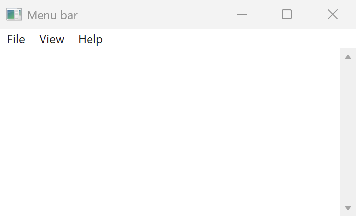

แถบเมนู (MenuStrip)
ในกล่องเครื่องมือ: แถบเมนู · เทียบกับ WinForms: MenuStrip
เมนูบนสุดของหน้าต่าง เช่น File, Edit, View, Help - ที่รวมคำสั่งทั้งหมดของโปรแกรม ผู้ใช้หาคำสั่งได้ที่เดียว
- คลิกที่แถบในตัวออกแบบแล้วพิมพ์ชื่อเมนูได้เลย · ใส่
&หน้าตัวอักษรให้กด Alt+ตัวนั้นเปิดเมนูได้ เช่น&File - แต่ละรายการตั้ง (Name) = ชื่อ method ที่จะทำงาน · ShortcutKeys ปุ่มลัด เช่น
Ctrl+N,F1 - CheckOnClick: กดแล้วติ๊กสลับเอง (เช่น "ตัวใหญ่" เปิด/ปิด) · Separator เส้นคั่น

อยู่ในกล่องเครื่องมือกลุ่ม เมนูและแถบเครื่องมือ (Menus and toolbars) - ลากมาวางบนฟอร์มแล้วมันจะไปอยู่บนสุดของหน้าต่าง คลิกที่มันในตัวออกแบบเพื่อพิมพ์ชื่อรายการ และตั้ง Properties ของแต่ละรายการ · มันเป็นส่วนหนึ่งของฟอร์ม ไม่ใช่ control รายการแต่ละอันทำงานด้วย method ที่มีชื่อเดียวกับ (Name) ของมัน
ตัวอย่าง
1. เมนูในไฟล์ฟอร์ม
ทุกอย่างนี้สร้างได้ด้วยการพิมพ์ในตัวออกแบบ - ไฟล์จะออกมาแบบนี้:
# Phai Studio form - docs/phaiform.md
format = 1
[form]
name = "MenubarDemo"
title = "Menu bar"
size = [360, 170]
start = "center"
[[menu]]
label = "&File"
[[menu.items]]
id = "new_note"
label = "New"
key = "Ctrl+N"
[[menu.items]]
separator = true
[[menu.items]]
id = "exit"
label = "Exit"
[[menu]]
label = "&View"
[[menu.items]]
id = "big_text"
label = "Big text"
check_on_click = true
[[menu]]
label = "&Help"
[[menu.items]]
id = "about"
label = "About"
key = "F1"
[[control]]
kind = "textarea"
id = "note"
bounds = [0, 0, 360, 170]
dock = "fill"2. method ของแต่ละรายการ
ชื่อ method = (Name) ของรายการ:
fn new_note(&mut self, ui: &MenubarDemoUi) {
ui.note.set_text("");
}
fn exit(&mut self, ui: &MenubarDemoUi) {
ui.close();
}
fn about(&mut self, ui: &MenubarDemoUi) {
message_box(ui.hwnd, "A menu bar made with Phai Studio.", "About", MessageBoxButtons::Ok, MessageBoxIcon::Information);
}3. รายการที่ติ๊กได้
CheckOnClick สลับติ๊กให้เอง แล้วถามด้วย ui.item_checked:
fn big_text(&mut self, ui: &MenubarDemoUi) {
// CheckOnClick: the tick turns over by itself; ask it which way it is now.
let big = ui.item_checked("big_text");
ui.note.set_text(if big { "Big text is on" } else { "Big text is off" });
}หน้าต่างตัวอย่างทั้งหมด: menubar_demo.phaiform กับ menubar_demo.rs ในโปรเจกต์ docs/help-src/examples/controls - รันด้วย cargo run -- menubar
Method
| Method | ทำอะไร |
|---|---|
ui.item_checked("id") | รายการนี้ติ๊กอยู่ไหม (เมนู หรือปุ่มบนแถบเครื่องมือที่ id เดียวกัน) |
ui.set_item_checked("id", true) | ติ๊ก หรือเอาติ๊กออก |
ui.set_item_enabled("id", false) | false เป็นสีเทา กดไม่ได้ · true กดได้ |
Properties
| Property ของรายการ | ทำอะไร |
|---|---|
| (Name) | ชื่อของรายการ และชื่อ method ที่ทำงานเมื่อเลือก |
| Text | ข้อความที่เห็น (คีย์ภาษาอังกฤษ โปรแกรมแปลให้) |
| ShortcutKeys | ปุ่มลัด เช่น Ctrl+S, F5 |
| Checked | ติ๊กไว้ตั้งแต่เปิดหน้าต่าง |
| CheckOnClick | กดแล้วติ๊กสลับเอง |
| Enabled | กดได้ หรือเป็นสีเทา |
| Image | รูปเล็ก ๆ หน้ารายการ |
| Separator | เป็นเส้นคั่นแทนรายการ |
Events
| Event | ทำอะไร |
|---|---|
| Click | เลือกรายการ - method ชื่อเดียวกับ (Name) ของมัน |
| CheckedChanged | ติ๊กของรายการเปลี่ยน (CheckOnClick) |
| DropDownOpening | เมนูกำลังจะเปิด - ติ๊กหรือปิดรายการให้ตรงกับสถานะตอนนี้ได้ที่นี่ |
| DropDownClosed | เมนูปิดแล้ว |
| MenuStart / MenuComplete | ของแถบเมนูทั้งแถบ (อยู่ใน Events ของฟอร์ม): เริ่มใช้เมนู / ใช้เสร็จ |
ลองทำเอง
- เพิ่มเมนู Edit ที่มี Copy (Ctrl+C) และ Paste (Ctrl+V) ทำงานกับช่องข้อความ
- ปิดรายการ "New" ไว้ (
set_item_enabled) จนกว่าจะพิมพ์อะไรสักอย่าง